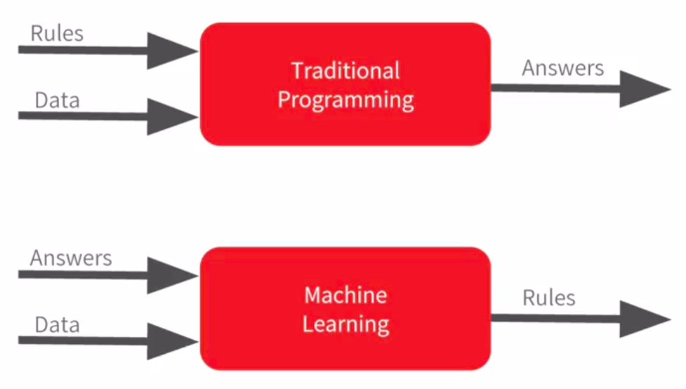
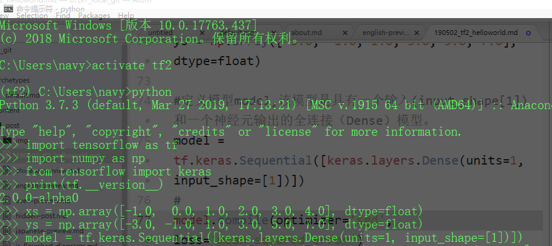
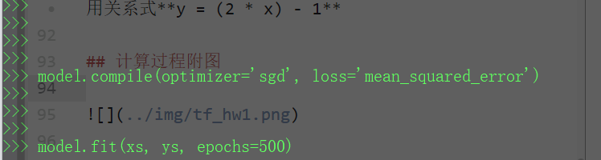
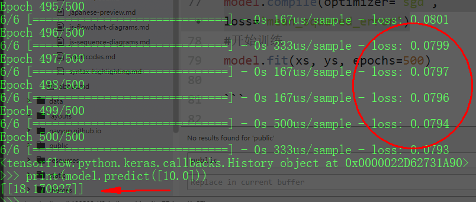

[Tensorflow2.0] 第一弹 “HelloWorld”

文章目录
数据样本
数据背景
假设有一组数据样本，其输入和输出可以用两个数值来表示，其格式为（x，y）,具体如下： （-1，-3），（0，-1），（1，1），（2，3），（3，5）（4，7）。那么如何得到一个模型，对未来的数据进行预测呢？也就是说，能否通过样本数据来计算得到一个几乎正确的模型呢？
目的
通过tensorflow 2.0对上述几个数据样本，来拟合一个简单的模型，然后输入数据x’预测输出y’，将预测出的数据y’和y进行比较，看看一个非常简单模型的准确性。
通过不到10行的代码，演示tensorflow 2.0 从数据的理解、整理、模型定义、模型编译、模型训练、预测（泛化），这种更为简单的方法来进行机器学习（深度学习）。
数据分析
通过分析，我们可以得出，该组数据符合 y = 2x-1 关系式，即 y = (2 * x) - 1。
TIPS: 机器学习与传统方法的思路不同。传统方法是有输入，有模型（规则），然后来计算输出；而机器学习则是有输入、有输出，然后计算模型（规则），从而用模型来预测未来（泛化，Generalization）。

模型与实现
思路
- 利用已有数据，为模型准备训练数据
- 定义模型、编译、训练
- 预测
编码实现
|
|
|
|
总结
使用训练好的模型，可以得到预测结果。当喂入数据10时，其输出为18.17，和直接用关系式y = (2 * x) - 1 得到19还是有很大差距。但是，当随着样本数量的增加，其误差会越来越小。可以肯定得是，机器学习还是比较靠谱的。
计算过程附图
  
文章作者 海萨
上次更新 2019-05-03
许可协议 MIT